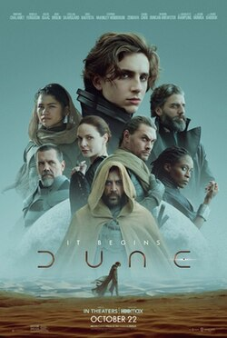
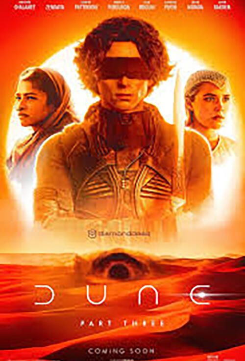
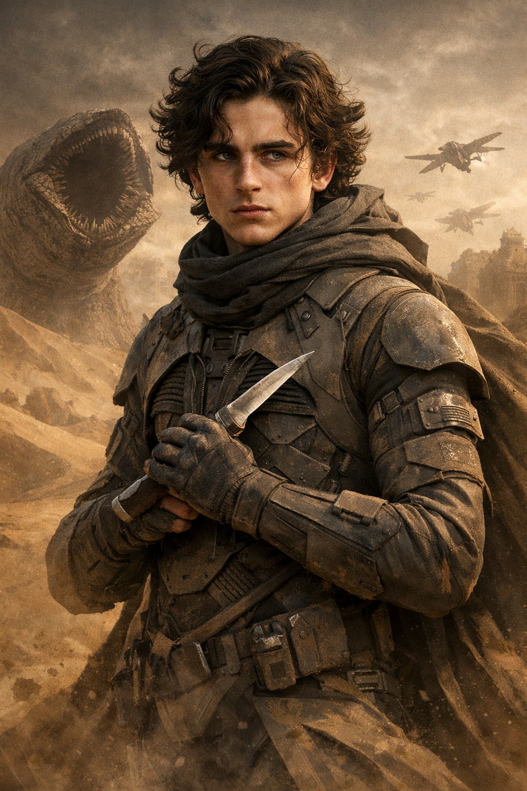
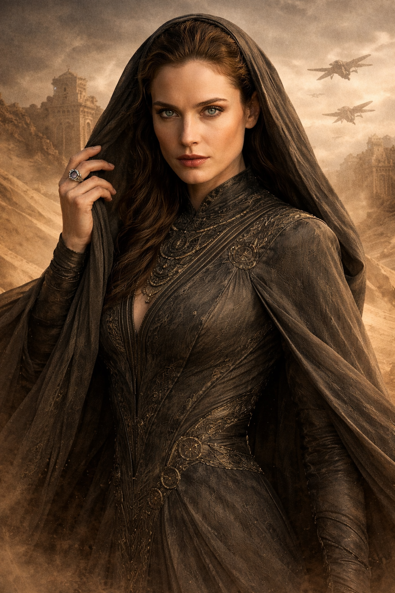
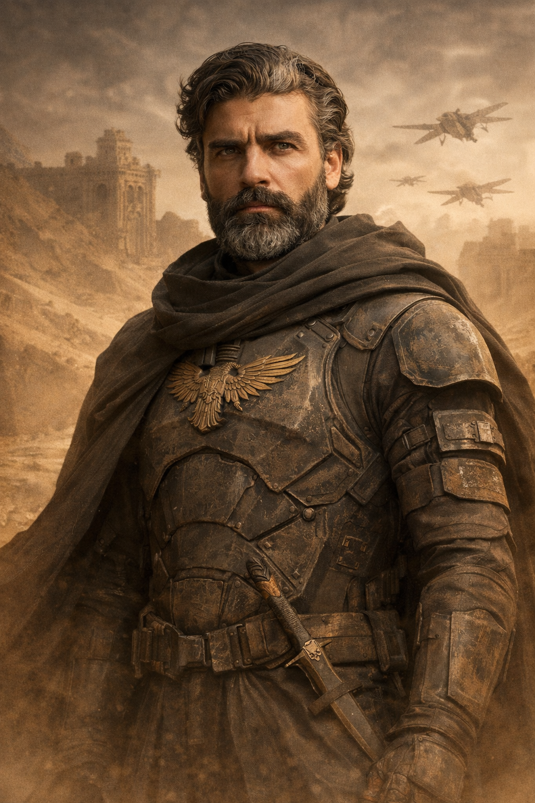
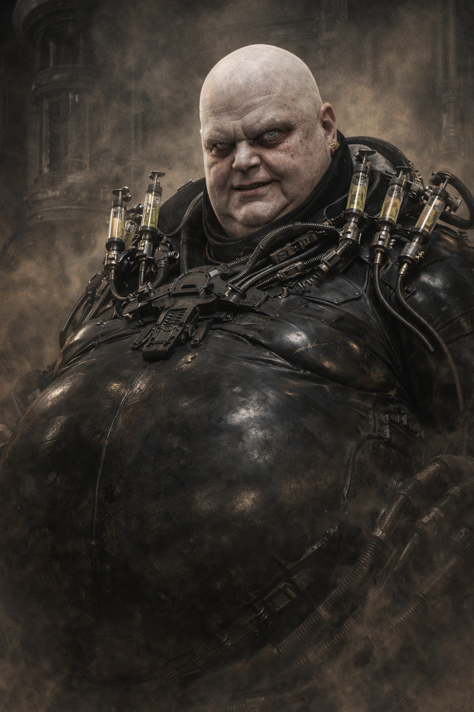

Filmes de Duna

Duna (2021)
Dirigido por Denis Villeneuve.

Duna Parte 2 (2024)
Continuação da obra.

Duna Parte 3 (2026)
Terceira e última parte da obra.
O épico universo criado por Frank Herbert

Herdeiro da Casa Atreides e figura central do destino de Arrakis.

Membro da ordem Bene Gesserit e mãe de Paul.

Líder da Casa Atreides e pai de Paul.

Vilão cruel e líder da Casa Harkonnen.
Duna
Messias de Duna
Filhos de Duna
Imperador-Deus de Duna
Hereges de Duna
As Herdeiras de Duna

Dirigido por Denis Villeneuve.
Continuação da obra.

Terceira e última parte da obra.
Frank Herbert passou cerca de seis anos pesquisando e escrevendo Duna.
O livro foi rejeitado por diversas editoras antes de ser publicado.
Duna se tornou o livro de ficção científica mais vendido da história.
A obra mistura política, religião, filosofia e ecologia.
A especiaria melange permite viagens espaciais no universo da história.
Frank Herbert se inspirou em desertos reais para criar Arrakis.